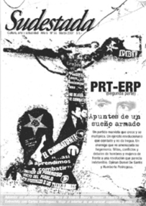

Buscar
Roberto Bolaño: Laberinto salvaje
El universo del escritor y poeta chileno Roberto Bolaño parece en constante movimiento, aún después de tres años de su muerte. Luego de décadas de silencio e indiferencia, el autor de Los detectives salvajes sigue ganándose hoy un lugar entre los narradores más relevantes de América Latina en los últimos tiempos.
Edición N° 56
Marzo 2007
Revista bimensual
Comprar edición impresaSumario
- PRT-ERP: Apuntes de un sueño armado (2° parte)
- Fascistas con micrófono...
- Carlos María Domínguez: "Aprendimos a esconder la vida privada"
- Roberto Bolaño: Laberinto salvaje
- Oventik: viaje al interior de un caracol
Compartir Articulo
Tarde
Fácilmente se dice que la emergencia de Roberto Bolaño, a partir de 1998, fue tardía.
¿Pero es que hay una edad para mostrarse?
¿Cuándo se es ya lo que se es y se toma la decisión de salir al descampado?
No hay reglas, y sí hay lugares comunes que pretenden atrapar el momento del despegue literario, que se cree, ingenuamente, puede establecerse con los datos de una publicación. Y si ésta es, digamos, de proyección internacional, pues no hay lugar a dudas.
La obra narrativa de Bolaño, por suerte, se sale de ese estereotipo.
Si Roberto no hubiese ganado, con Los detectives salvajes, el Premio Herralde de Novela en 1998 y en 1999, el Premio Rómulo Gallegos; quizás el fenómeno Bolaño se habría demorado. Sólo demorado. Porque tarde o temprano habríamos descubierto que estaba frente a nuestras narices uno de los filones fundamentales de la narrativa latinoamericana, no de su generación (como acostumbra calzarse en las solapas para condescender, ¿con quiénes?), sino del siglo veinte.
Esa es la cuestión: Roberto Bolaño ha roto, con un par de pedradas, las ventanas desde las que se suponía era posible atisbar con perfecta nitidez el discurrir canónico de la literatura latinoamericana.
Aunque la noción del llamado "boom de la narrativa latinoamericana" tiene mucho que ver con el mercadeo editorial, no puede desconocerse que en el pequeño listado de autores que subieron a la cresta de esa ola están algunos autores decisivos: García Márquez y Cortázar, sobre todo.
Lo cierto es que aquella acepción de boom fue restrictiva y errática (a ratos, inútil), en tanto que obvió, por ejemplo, la subterránea labor cuentística de muchos autores, factor clave, si se quiere, para un despliegue novelístico de gran aliento.
Aún más: lo que aconteció en América Latina entre 1960 y 1970 fue una auténtica y radical irrupción de todo un complejo sistema literario que no se redujo al ámbito narrativo.
Esto del llamado boom dejó, además, por fuera creaciones capitales como las de Onetti, Piñera, Di Benedetto, Garro, Ribeyro, Wilcock, Sabato, Arguedas, Puig...
Se dirá que unos llegaron temprano (Vargas Llosa) y otros llegaron tarde o ni siquiera se dieron por enterados o no les interesó (Rulfo).
Roberto Bolaño, consciente de la situación de la literatura latinoamericana y lector crítico e impenitente de esa herencia, emprendió un camino propio, en solitario (como debe ser) que fue a desembocar, después de largo bregar, en Los detectives salvajes. O mejor: su perfil narrativo más nítido puede captarse en esa poderosa novela que aún hay quienes no terminan de entender, porque les parece un despropósito, una tomadura de pelo y una soberana irreverencia.
Y no andan tan perdidos: Los detectives salvajes no tiene un rumbo fijo, por ratos va para un lado, pero al momento tuerce; es un vagabundeo, un delicioso vagabundeo por un mundo salpicado de iniquidades y desvaríos y paradojas.
Por su ensamblaje discursivo, no se sabe (ni es relevante) si éste es aquél o el otro, o si dijo o no dijo lo que dijo. Lo importante es que Bolaño en esa novela logra formular coordenadas ficcionales de un modo diferente al que se venía haciendo en la narrativa latinoamericana. He ahí uno de sus hallazgos.
Como sea, no es la consagración editorial la que determina la calidad y la hondura de una producción literaria.
¿Acaso se sabe que Carlos Martínez Rivas es el poeta, en sentido estricto, más radical y significativo del siglo veinte en América Central?
El camino de Roberto Bolaño para hallar la salida editorial fue sinuoso: deambuló adherido a las estridencias de la ciudad más grande del mundo, vino avanzando por los costados del crepúsculo y con los ojos vendados y con el hígado inflamado, y no quiso ni gloria ni dinero, simplemente se puso a escribir bien, frente al sol y sin visera y con un insolente sentido del humor al ristre. Y nada más...
(La nota completa en la edición gráfica de Sudestada n°56)
Comentarios
Jaime Barba, desde El Salvador
Articulos más vistos


LIBRERÍA SUDESTADA

Colección infantil

Distribuidora de Libros

Suscripción

Sudestada en URUGUAY

Otros articulos de esta edición
 En la calle
En la calle
Oventik: viaje al interior de un caracol
Oventik está ubicado a una hora de San Cristóbal de las Casas. A unos 3500 metros de altura, se encuentra ...
Carlos María Domínguez: "Aprendimos a esconder la vida privada"
Roberto de Las Carreras fue un dandy audaz que se burló y combatió la moral burguesa de principios del siglo ...
PRT-ERP: Apuntes de un sueño armado (2° parte)
Un partido marxista que crece y se multiplica. Un ejército revolucionario que combate y no da tregua. Un enemigo que ...
 Editorial
Editorial